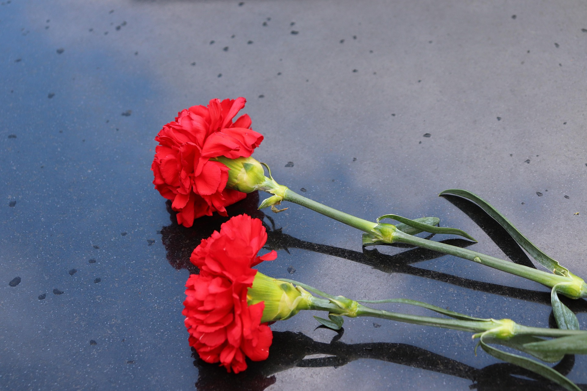

No dia 5 de outubro de 1910, a monarquia terminou e foi proclamada a República Portuguesa.
No dia 25 de abril de 1974, a Revolução dos Cravos pôs fim à ditadura e abriu caminho à democracia.

Lista dos Presidentes da República, por ordem cronológica. As datas correspondem ao período em que exerceram o cargo.
| Presidente | Mandato |
|---|---|
| Manuel de Arriaga | 24/08/1911 – 29/05/1915 |
| Teófilo Braga | 29/05/1915 – 05/10/1915 |
| Bernardino Machado | 05/10/1915 – 11/12/1917 |
| Sidónio Pais | 09/05/1918 – 14/12/1918 |
| João do Canto e Castro | 16/12/1918 – 05/10/1919 |
| António José de Almeida | 05/10/1919 – 05/10/1923 |
| Manuel Teixeira Gomes | 05/10/1923 – 11/12/1925 |
| Bernardino Machado | 11/12/1925 – 31/05/1926 |
| José Mendes Cabeçadas Júnior | 31/05/1926 – 17/06/1926 |
| Manuel Gomes da Costa | 17/06/1926 – 09/07/1926 |
| Óscar Carmona | 09/07/1926 – 18/04/1951 |
| Francisco Craveiro Lopes | 09/08/1951 – 09/08/1958 |
| Américo Tomás | 09/08/1958 – 25/04/1974 |
| António de Spínola | 15/05/1974 – 30/09/1974 |
| Francisco da Costa Gomes | 30/09/1974 – 14/07/1976 |
| António Ramalho Eanes | 14/07/1976 – 09/03/1986 |
| Mário Soares | 09/03/1986 – 09/03/1996 |
| Jorge Sampaio | 09/03/1996 – 09/03/2006 |
| Aníbal Cavaco Silva | 09/03/2006 – 09/03/2016 |
| Marcelo Rebelo de Sousa | 09/03/2016 – 09/03/2026 |
| António José Seguro | Desde 09/03/2026 |